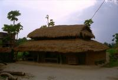

|
Mercredi 25 avril
Départ de Kathmandou à 12H30. Arrivée à Sauraha, autrement dit le parc national
de Chittwan. L'après-midi même on va se balader vers les gros éléphants et en
bordure de jungle le long de la Rafti River. Martin-pêcheurs, perroquets verts
et... un rhinocéros! Enorme. En fait, on voit ses fesses qui s'éloignent à 200
mètres de nous. C'est un bon début. Sûrement que demain on en verra plein et
aussi des tigres. Il pleut, on est trempés et dégoûtés! Et s'il pleut demain?
Le soir, danses népalaises traditionnelles pleines d'humour avec les traditionnelles
coupures d'électricité toutes les 5 minutes.
Jeudi 26 avril
Lever 6H00. Chouette, il fait beau. C'est parti pour 1 heure de pirogue en
descendant la Rafti River infestée de crocodiles (selon les agences). Ca fiche
la trouille, le fond de la pirogue est plat et dès qu'on bouge, ça balance dangereusement.
Pourvu qu'on ne se renverse pas au milieu des crocodiles! Finalement, après
1 heure de balade très agréable au fil de l'eau, de nombreux oiseaux petits
et grands et... zéro crocodile, on débarque pour 3 heures de marche dans la
jungle. Paraît que c'est dangereux. Mais on a les consignes: pour un un rhino,
il faut grimper aux arbres, pour un tigre - animal au demeurant très gentil
- rester groupés et ne pas bouger, pour un ours rester groupés et crier pour
lui faire peur. Dans tous les cas, si on se fait courser, il faut lancer ses
vêtements un à un pour ralentir la bête et donc finir à poil! Et en plus, on
a 4 guides pour nous 6, même pas peur! Et c'est en se demandant si on ne ferait
pas mieux de remonter dans la pirogue qu'on s'enfonce dans la jungle (on a tout
de même lu dans un guide que cela peut être dangereux et que les guides font
ce genre de balade pour ne pas perdre leur boulot, juste parce que cela plaît
aux touristes!). Innombrables cris d'oiseaux, arbres aux formes très biscornues,
lianes d'arbres en arbres, herbes hautes avec plein de rhinos et de tigres cachés
derrière, lianes énormes enserrant les troncs tels des serpents et s'élançant
vers les sommets. Traces laissées par un léopard montant avec sa proie en haut
d'un arbre à l'abris des tigres, traces de pattes de tigres, singes sautant
d'arbre en arbre avec de gros ronflements, mini-biches, cochons sauvages, paons,
poules sauvages, serpent d'eau se dressant hors de la rivière pour mieux nous
observer, on a vu tout cela! On a marché comme des sioux pour ne pas se faire
charger par les rhinos et, en fait, ni rhinos, ni ours, ni tigres! Soulagés
et déçus.
L'après-midi, on repart mais en jeep, pour 5 heures de balade. Deux heures
plus tard, on trouve que la promenade est superbe, les arbres aux troncs bizarres
sympas et géants, ceux avec le feuillage poussant le long des grosses branches
rigolos, les termitières hautes comme nous, mais c'est tout! On désespère, sauf
Lionel qui a déjà vu un lapin géant mangeant du poisson, un crocodile, une autruche,
2 troupeaux de girafes au loin, un dinosaure et un blablaba. Et finalement,
nous aussi on voit ... un rhino. Puis un autre, deux autres, cela ne s'arrête
plus! On en voit 6 dont le plus près à 40 ou 50 mètres! Et on voit aussi des
biches minuscules (60 cm de haut), des singes, des cigognes (c'est notre tour
du monde des Vosges, Lionel est aux anges), des paons, des tas de crocodiles
nommés ghadials à la ferme d'élevage (non, ce n'est pas de la triche) et un
ours! Enfin, une descente de lit, parce qu'on a juste vu sa fourrure dans les
hautes herbes, à 10 mètres de la jeep pourtant. Paraît qu'il a les yeux cerclés!
On rentre fourbus après 5 heures debout dans la jeep et dans la poussière,
à scruter la jungle de nos grands yeux avides de vie sauvage. Un peu plus et
on passait la nuit dans la jungle! Grosse panne de cette bonne vieille jeep
russe de 1940. Réparation avec de l'eau! 20 minutes plus tard, ouf, ça repart.
Joli coucher de soleil sur la Rafti River et baignade des éléphants, spectacle
très rigolo.
Vendredi 27 avril
Lever à l'aube pour aller observer les oiseaux. La balade, une fois de plus,
est très agréable au milieu des grands arbres et des buissons, l'air empli des
cris d'animaux venus on ne sait d'où ni de qui!!! Pic-verts, perroquets verts,
joli très grand oiseau bizarre au vol surprenant (2 battements d'aile, planer,
2 battements, etc), superbe oiseau de paradis, toucan (non, ça c'était hier)
et plein d'autres sans nom.
A 7H15, jeep pour l'arrêt de bus d'où on doit partir pour Kakarbittha à 8H15.
Il est presque 14H00 et... on attend toujours le bus. Il est quelque part dans
la montagne bloqué par un glissement de terrain entre Mugling et Sauraha. Et
l'hôtel qui ne veut pas nous offrir l'hospitalité jusqu'au bus de 17H30! A moins
de payer 200 NRp pour le déplacement en jeep, pour l'essence des 2 kms... sont
fous. On a pris un "package" transport + hôtel + visite du parc pour être tranquille
et, en fait, ils n'assurent pas du tout. Bref, comme dit Lionel, y'en a marre
du Népal, on a tous les inconvénients d'un pays hyper touristique (touristes
partout, gens qui vendent de tout partout et très insistants) sans en avoir
les avantages (eau, éléctricité, transports, tout cela est plus qu'aléatoire).
Il est vrai qu'on n'a pas eu de chance ici. Quand le bus arrive enfin à 18H00,
c'est sous la pluie battante! Mais on est quand même ravis car 10 minutes plus
tôt, c'était un féroce orage de grêle! Des grélons gros comme des balles de
ping pong se sont abattus avec fracas sur la ville qui s'est enfermée en quelques
secondes. Barricadée même sous la violence des assauts du vent!
Samedi 28 avril
Notre chauffeur, soit il a la tourista, soit il a un sérieux problème de prostate!
Arrêts 30 minutes toutes les heures et demie. Et il il a tenu le rythme toute
la nuit! Tu m'étonnes que ça soit si long les trajets! Cela dit, ça nous a quand
même rassurés: toutes les deux heures, la pause s'impose, c'est bon pour rester
éveillé (pour le chauffeur, pour nous c'est une autre histoire) et en plus il
ne roulait même pas comme un fou! Faut dire que l'orage nous a accompagnés toute
la nuit, le plus souvent sans pluie heureusement.
Il est 6H00, ça y est, le bus népalais est enfin arrivé à la frontière. Contrôle
des passeports, cachet sur le visa, et c'est reparti pour... un autre bus. Une
gentille dame très souriante (voire super souriante comme dirait Marion) nous
montre où nous assoire, juste à côté d'elle... et puis elle nous fait signe
de poser nos sacs juste devant elle pour ne pas qu'on soit embêté. Elle a fait
cela comme ça, gratuitement! Sans même essayer de nous vendre une boisson fraiche
("cold drink" en népalais). Vive l'Inde! Un quart d'heure après, trois flics
tirent la gentille petite dame hors du bus. Elle avait planqué sous elle des
objets de contrebande (dont des K7, le reste, on ne sait pas). A croire qu'elle
voulait nos sacs pour cacher les siens. Tristesse et désillusion... j'ai de
gros doutes sur la bonté de la nature humaine.
Siliguri, départ en minibus (encore un bus) pour Darjeeling que nous atteignons
4 heures plus tard, les fesses en compote. Surtout qu'en 3 mois de promenade,
on a perdu toute la bonne graisse qui protégeait les os de nos fesses. On a
l'impression d'avoir les os qui transpercent la peau à force d'être assis. Bref,
il est 13H00, on a notre hôtel. Plutôt rapide, hier à 8H00 du mat' on attendait
notre bus et nous voilà déjà arrivés!!!
Suite du voyage : Retour en Inde
|
Népal
Chittwan
|

Népal
Chittwan
|
Népal
Chittwan
|
Népal
Chittwan
|
Népal
Chittwan
|

Népal
Chittwan
|
Népal
Chittwan
|
Népal
Chittwan
|
|
|